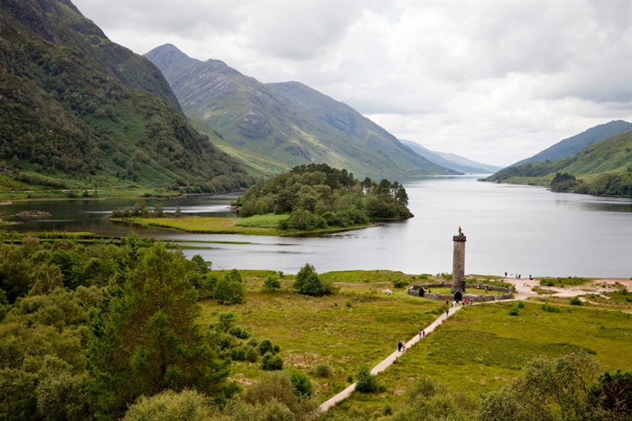

Eu duvido que você não conhece esse cenário, pois ele esta em dois filmes que fiz e novamente tenho uma ótima noticia para você ... ele existe na vida real! Sim, tanto o viaduto quanto o trem são reais!

Glenfinnan atrai milhares de visitantes de todo o mundo em busca de deslumbrantes paisagens, além da atmosfera mágica do meu universo bruxo.
O viaduto de Glenfinnan, que aparece em cenas do filme A Câmara Secreta e O prisioneiro de Azkaban (quando eu e o Rony aparecemos voando entre os arcos do viaduto Glenfinnan), é uma das paradas obrigatórias para os meus fãs e também para quem deseja conhecer uma das regiões mais bonitas do mundo.
O trem Jacobite (conhecido como o Hogwarts Express) realiza passeios regulares durante o verão, e diversas datas no inverno ligando a região de Highlands ás ilhas da costa oeste da Escócia. Em funcionamento desde 1949, o trem percorre um caminho de 136 quilômetros (ida e volta entre as cidades de Fort William e o vilarejo de Mallaig) em um passeio de 2 horas por deslumbrantes paisagens escocesas. A região é considerada a mais bonita do país, e o público poderá apreciar lagos, montanhas, viadutos e túneis e muito mais a bordo do maria fumaça.
Horário de Funcionamento: A partir das 09h00 até a 20h00 (esses horários podem ser alterados, devido a pandemia)
Melhor época para visitar: O Ano todo
Valor: Os ingressos para o West Coast Railways Hogwarts Express custam 37,75 libras para adultos e 20,75 libras para crianças de até 12 anos.
Ainda temos mais um lugar para visitar, então clique em próxima parada e vamos nessa!